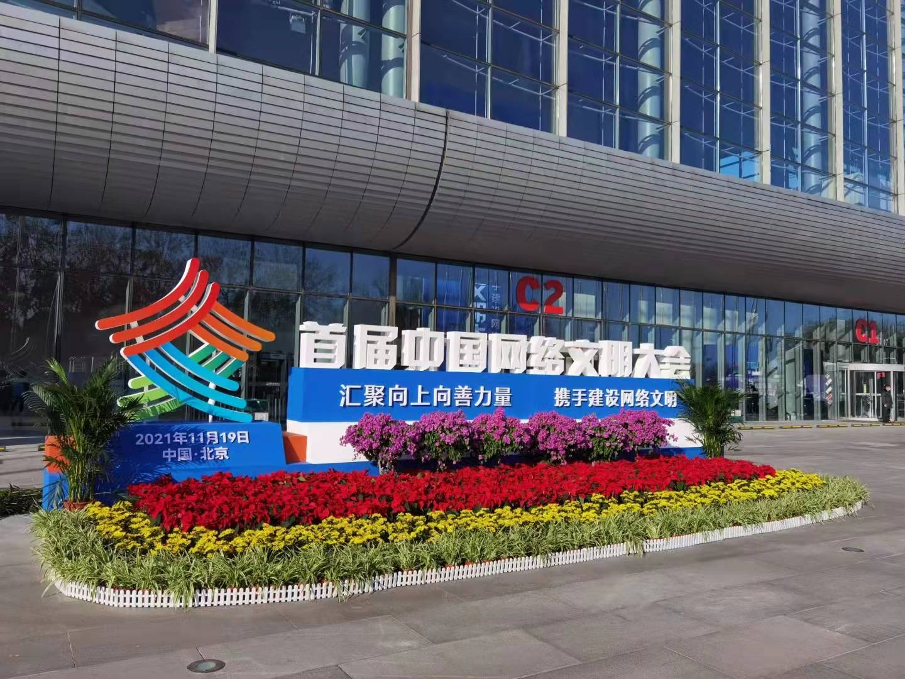
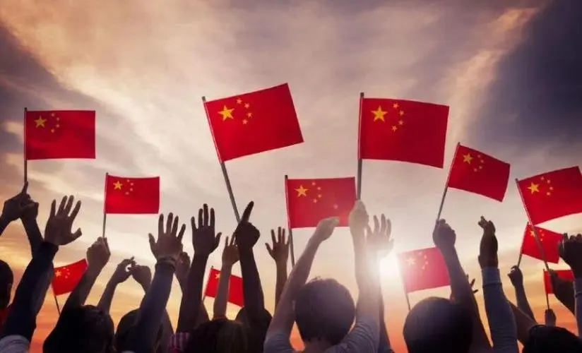
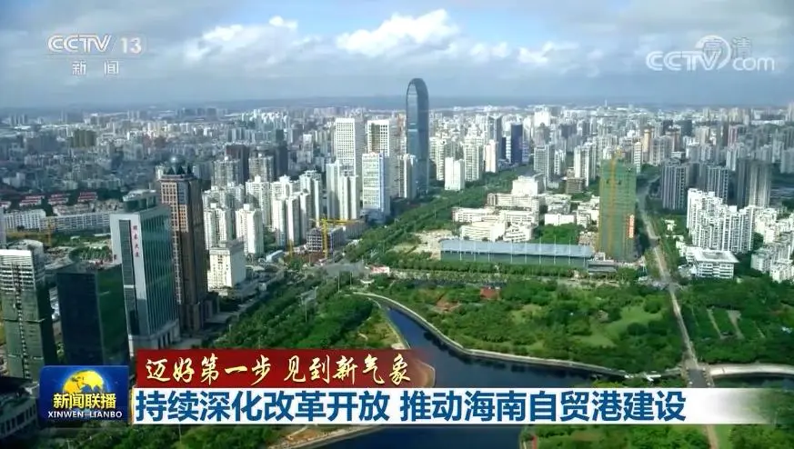

未来的中国社会
未来的中国将继续保持快速、稳健的经济增长，成为全球最大经济体之一。在政治、文化、科技等各个领域，中国也将继续迎来新的发展和变革，成为一个更加繁荣、稳定、文明、和谐、自信、开放的国家。中国将坚持走和平发展道路，推动建设人类命运共同体，为世界和平与发展做出更大的贡献。
富强
随着我国经济的不断发展，未来的中国将成为一个经济实力更加强大、更加高质量、高效率、高增长的国家。未来的中国将继续推进改革开放，加强市场化、法制化和国际化建设，进一步激发经济发展的内生动力，以创新为核心，打造更加优质、高效、智能、绿色的经济增长模式。同时，未来的中国将注重科技创新和人才培养，加快构建现代产业体系，推动高技术产业和新兴产业的发展，打造更具核心竞争力的国家品牌。未来的中国将不仅是世界制造业的工厂，更是世界科技的创新中心，为全球经济发展和人类进步做出更大的贡献。
和谐
我国是一个多元化的国家，保持社会稳定是我国发展的重要基石。未来的中国将坚持和完善社会主义制度，加强法治建设，保障公民的基本权利和自由，维护社会公平正义，推进全面依法治国。同时，未来的中国将注重民生建设，加强教育、医疗、社会保障等基本公共服务，保障全体人民的生活质量和幸福感。这些措施将有效维护社会稳定，促进社会和谐，为国家的繁荣稳定奠定坚实的基础。
民主
民主是一个国家发展的重要标志。未来的中国将注重文化建设，加强文化自信和文化软实力的提升。未来的中国将重视传统文化的传承和创新，推动文化多样性和文化交流，打造更具国际影响力的中国文化品牌。同时，未来的中国将注重环保和可持续发展，推动生态文明建设，保护生态环境，打造更美丽的中国。这些措施将有效促进国家的文化繁荣和可持续发展，为人民创造更美好的生活。

民主是一个国家发展的重要标志。未来的中国将注重文化建设，加强文化自信和文化软实力的提升。未来的中国将重视传统文化的传承和创新，推动文化多样性和文化交流，打造更具国际影响力的中国文化品牌。同时，未来的中国将注重环保和可持续发展，推动生态文明建设，保护生态环境，打造更美丽的中国。这些措施将有效促进国家的文化繁荣和可持续发展，为人民创造更美好的生活。
和睦
和睦是一个国家发展的重要保障。未来的中国将注重民族团结和社会和谐，加强民族交流和融合，实现各民族共同繁荣和发展。同时，未来的中国将注重国际合作和共赢，积极参与全球治理，推动构建人类命运共同体，为世界和平与发展作出更大的贡献。这些措施将有效维护国家的和谐稳定，促进国际社会的共同发展繁荣。
和睦是一个国家发展的重要保障。未来的中国将注重民族团结和社会和谐，加强民族交流和融合，实现各民族共同繁荣和发展。同时，未来的中国将注重国际合作和共赢，积极参与全球治理，推动构建人类命运共同体，为世界和平与发展作出更大的贡献。这些措施将有效维护国家的和谐稳定，促进国际社会的共同发展繁荣。
自信心
自信是一个国家发展的重要支撑。未来的中国将注重塑造国家形象，提升国际话语权，推动中国智慧、中国方案、中国力量在国际舞台上发挥更大的作用。同时，未来的中国将注重国防建设，加强军队现代化建设，提高国家安全能力，保障国家安全和发展。这些措施将有效提高国家的自信心，增强国家的凝聚力和向心力，推动中国实现更快、更好、更高水平的发展。

自信是一个国家发展的重要支撑。未来的中国将注重塑造国家形象，提升国际话语权，推动中国智慧、中国方案、中国力量在国际舞台上发挥更大的作用。同时，未来的中国将注重国防建设，加强军队现代化建设，提高国家安全能力，保障国家安全和发展。这些措施将有效提高国家的自信心，增强国家的凝聚力和向心力，推动中国实现更快、更好、更高水平的发展。
全面开放
开放是促进国家发展的重要力量。未来，中国将继续推进对外开放，加强国际合作和交流，形成全方位、多层次、广泛领域的开放格局。中国将注重自由贸易区建设，推动构建更加开放、普惠、平衡、共赢的全球经济治理体系。同时，中国将重视人文交流，加强文化、教育、科技、旅游等领域的交流与合作，促进人文交流成为推动国际关系发展的重要支撑。这些措施将为中国实现更快、更好、更高水平的发展提供有力支撑。

开放是促进国家发展的重要力量。未来，中国将继续推进对外开放，加强国际合作和交流，形成全方位、多层次、广泛领域的开放格局。中国将注重自由贸易区建设，推动构建更加开放、普惠、平衡、共赢的全球经济治理体系。同时，中国将重视人文交流，加强文化、教育、科技、旅游等领域的交流与合作，促进人文交流成为推动国际关系发展的重要支撑。这些措施将为中国实现更快、更好、更高水平的发展提供有力支撑。
中国面临着机遇和挑战，但拥有稳定的政治环境、庞大的市场和广阔的发展空间。中国将继续坚持自己的特色发展道路，推动改革创新、开放合作、和平发展，实现伟大的复兴之梦。未来，中国将迎来更加繁荣富强的时代，为全球经济和人类发展做出更大的贡献。